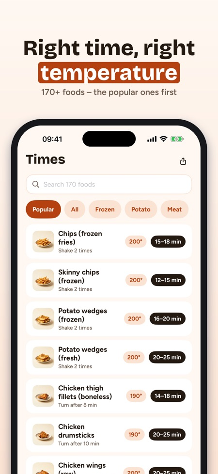
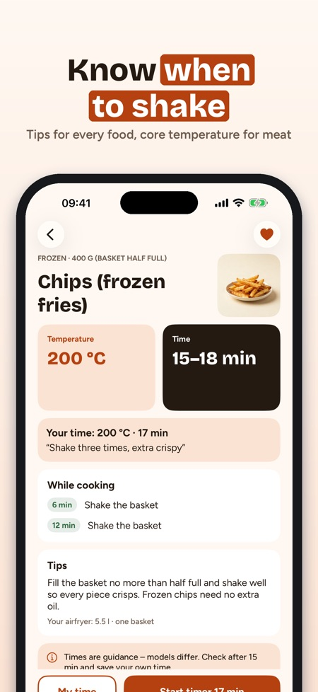
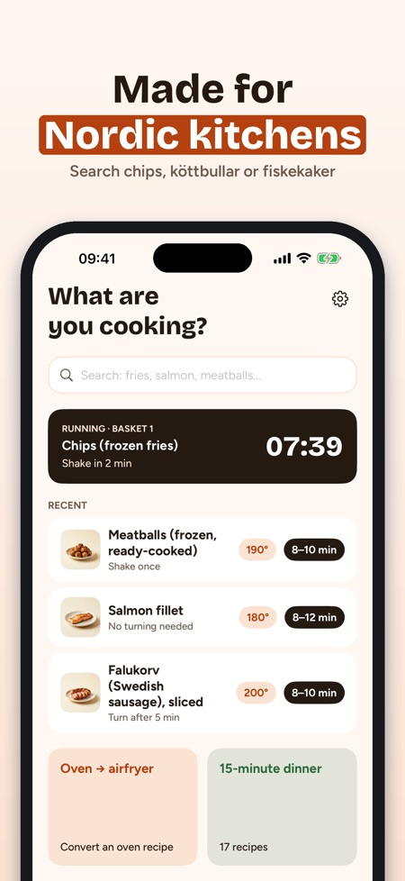

Cooking times & shake timer. A new air fryer for Christmas? Krispa shows the time and temperature for 170+ foods – and the countdown stays on the Lock Screen. Now with 12 Christmas recipes.



Right time, right temperature.
No ads, no account – the times table works without a purchase.
Krispa is the air fryer app made for Nordic kitchens, in Swedish, Norwegian, Danish, Finnish and English – from köttbullar and fiskekaker to frikadeller and karjalanpiirakka: how long and how hot for 170+ foods, a converter for oven recipes and timers that remind you to shake the basket.
TIMES TABLE FOR 170+ FOODS
• Frozen fries, meatballs, fish sticks, salmon, chicken, vegetables, bread and snacks
• Temperature, time range and when to shake or turn
• Tips on portion size, oil and how to get it crispy
OVEN → AIR FRYER
• Enter the oven temperature and time (conventional or fan)
• Get a suggestion for the air fryer and when to check – a rule of thumb, clearly labelled as such
TIMERS THAT TELL YOU
• A notification when it's time to shake or turn and when the food is ready
• Two baskets? Krispa starts the shorter timer later so both are ready together
• Up to four timers at once with Krispa Plus
• The countdown shows on the Lock Screen and in the Dynamic Island
68 OWN RECIPES
• Weekday dinners, sides, snacks, baking and Christmas food
• Change the number of servings – amounts are recalculated
• Cook mode step by step with a timer per step; the screen stays on
• Shopping list from the recipes, sorted by aisle
MY TIMES
• Save favorites and your own time, temperature and note – "our fries: 17 min, shake three times"
FOOD SAFETY
Chicken, pork and minced meat show a minimum core temperature – the strictest advice among the Nordic food agencies (Livsmedelsverket, Mattilsynet, Fødevarestyrelsen, Ruokavirasto). Fish: check that it is cooked through. Times are guidance – models differ, so always check in time.
HELP
Preheating, parchment paper, cleaning, placement and safety, white smoke, two baskets and why food doesn't turn out crispy.
KRISPA PLUS
The times table, the converter, one timer and 10 recipes are included without a purchase. Krispa Plus opens all 68 recipes, up to four timers, cook mode, your own times and the shopping list. Choose a yearly subscription (renews automatically, cancel any time in your App Store settings) or a one-time purchase. New subscribers start the yearly plan with a 7-day trial.
Works offline. No account. Krispa is not affiliated with any air fryer brand.